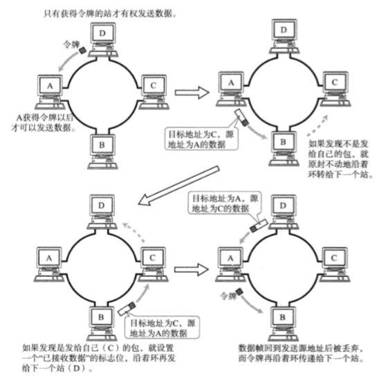
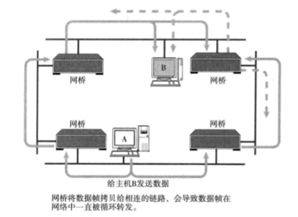
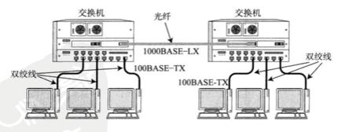
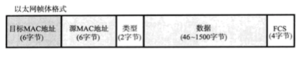

数据链路是让互连计算机之间相互通信的一种协议，又指通信手段；
各种数据链路一览：

数据链路相关技术
Mac地址：Mac 地址用于识别数据链路中互联的节点；
半双工与全双工通信：
半双工是指，只发送或只接受的通信方式。类似于无线电收发器，若两端同时说法，不能听见对方说的话；
全双工，可以在同一时间即发送数据又接收数据。类似于电话，接打双方可以同时说话；
共享介质型网络：
从通信介质的使用方法上看，网络可以分为共享介质型和非共享介质型。
共享介质型网络指由多个设备共享一个通信介质的一种网络。在这种方式下，设备之间使用同一个载波信道进行发送和接受。因此，采用半双工通信方式，需要对介质进行访问控制；（最早的以太网和FDDI）
共享介质型网络有两种介质访问控制方式：一种是争用方式，另一种是令牌传递方式。
争用方式：CSMA/CD
CSMA/CD要求每个站提前检查冲突，一旦发生冲突，则尽早释放信道。工作原理如下：

（1）如果载波信道上没有数据流动，则任何站都可以发送数据；
（2）一边发送数据，一边检测冲突。（例如同轴电缆通过电压范围检查冲突）
（3）一旦发生冲突时，放弃发送数据，同时立即释放载波信道。放弃发送后，随机延时一段时间，再重新争用介质，重新发送帧。
令牌传递方式：
令牌传递方式是沿着令牌环发送“令牌”的特殊报文，只有获得令牌的站才能发送数据；

好处：一是不会有冲突，二是每个站都有平等循环获得令牌的机会，即使网络拥堵也不会导致性能下降
缺点：一个站在没有收到令牌前不能发送数据帧，因此在网络不太拥堵的情况下数据链路的利用率较低；
为了提高网络性能，衍生了多种令牌传递的技术；
非共享介质型网络：
非共享介质型网络指不共享介质，对介质采取专用的一种传输控制方式。在这种方式下，网络中的每个站直连交换机，由交换机负责转发数据帧。因为不需要共享通信介质，采用全双工通信方式；（以太网主流，ATM）

根据Mac地址转发：
以太网交换机利用自学功能生成转发表；
交换机的转发方式有两种：存储转发、直通转发。
- 存储转发检查以太网数据帧末尾的FCS位后再进行转发，可以避免发送由于冲突而被破坏的帧或噪声导致的错误帧；
- 直通转发不需要将整个帧全部接收下来再进行转发，只需得知目标地址即可开始转发。因此具有延迟较短的优势，但有发送错误帧的可能性；
环路检测技术
通过网桥连接网络时，又可能出现环路。导致数据帧持续被转发；

解决环路问题有两种方式：生成树、源路由；
生成树
以某一个网桥为构造树的根，并对每个端口设置权重，优先指定使用哪些端口以及发生问题时该使用哪些端口；
源路由
可以判断发送数据的源地址是通过哪个网桥实现传输的，并将帧写入RIF。网桥根据这个RIF信息发送帧给目标地址。即使网桥中出现了环路，数据帧也不会被反复转发，可成功送到目标地址。（这种机制发送端本身必须具备源路由的功能）。
VLAN 虚拟局域网：
虚拟局域网（VLAN）是一组逻辑上的设备和用户，这些设备和用户并不受物理位置的限制，可以根据功能、部门及应用等因素将它们组织起来，相互之间的通信就好像它们在同一个网段中一样，由此得名虚拟局域网。VLAN工作在OSI参考模型的第2层和第3层，一个VLAN就是一个广播域，VLAN之间的通信是通过第3层的路由器来完成的。它具有以下优点： 网络设备的移动、添加和修改的管理开销减少；可以控制广播活动；可提高网络的安全性。

以太网
以太网在众多数据链路中使用最为广泛，最为著名；
- 以太网结构：

以太网的分类：
以太网类型差异在于传输介质＋传输速度。在传输速度相同而传输介质不同时，可以连接允许更换传输介质的中继器或集线器；
在传输速度不同的情况下，必须采用允许变更速度的设备如网桥、交换集线器或路由器；
以太网帧格式：

以太网的首部共占14个字节：6字节目标Mac地址＋6字节源Mac地址＋2字节上层协议类型；
以太网数据帧的最大数据范围是46～1500字节；
帧尾是FCS（FrameCheckSequence帧检验序列）4个字节；